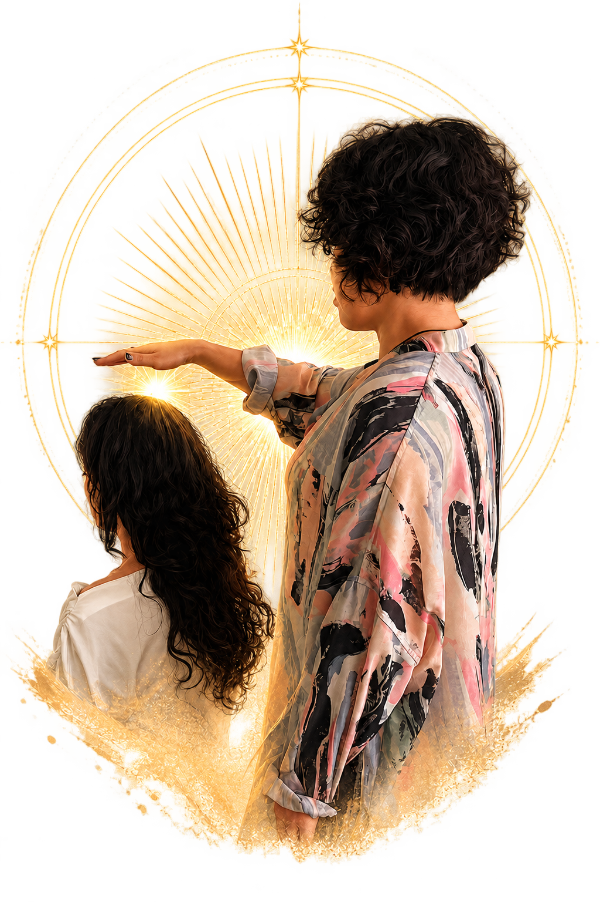

そっと手を当てる
一般的なマッサージのように揉んだり叩いたりせず、 服を着たまま、身体の気になる箇所へやさしく手を当てます。
ENSOPHIC REIKI®
心と身体を、 まるっと整える60分。
身体も、思考や行動のクセも。
その日の自分に合わせて自由に組み合わせるレイキセッションです。
根源のレイキ。いわば、源泉かけ流し。
施術を予約する →
あなたの中に眠る本来の輝きを呼び覚まし、
人生の流れを軽やかに、より豊かに。
エンソフィックレイキは、モダンミステリースクールで 受け継がれているレイキの体系に基づくヒーリングです。 身体にやさしく手を当てながら、忙しさの中で後回しにしてきた 自分自身へ、静かに意識を戻していきます。
施術の受け取り方は人それぞれ。 温かさ、心地よさ、深い休息感など、 そのときの自分に必要な時間としてお過ごしください。
揉まない。叩かない。強く押さない。
一般的なマッサージのように揉んだり叩いたりせず、 服を着たまま、身体の気になる箇所へやさしく手を当てます。
手の温かさ、深いリラックス感、身体が軽く感じる感覚、 こわばりがゆるむような感覚など、体感には個人差があります。
忙しさの中で外側へ向き続けた意識を、自分自身へ戻す時間。 心身が本来持つバランスを取り戻していくことをサポートします。
THE GENTLE WAY
レイキは、世界でも広く知られているヒーリングのひとつです。 世界中で行われている、揉んだり叩いたりせずに、 手を当てて心身を整えるヒーリングの源流のひとつともいわれています。
一般的なマッサージのように、筋肉を揉んだり、 強く押したりするものではありません。それでも、受けた方からは 「身体が軽く感じた」「こわばりがゆるんだように感じた」 といった声が聞かれることがあります。
レイキの考え方では、人間の身体には本来、 自らバランスを取り戻そうとする力が備わっているとされています。 その力が働きやすい穏やかな状態へ整えていくことをサポートします。
※感じ方や体感には個人差があります。 医療行為ではなく、病気の診断・治療を目的とするものではありません。
WHY ENSOPHIC?
MMSの教えでは、エンソフィックレイキは、 臼井甕男氏が最初に受け取った体系に基づき、 すべてを生み出した根源「エンソフ」の純粋な光線を 扱うレイキとされています。
根源からダイレクトに。決められた一律の60分ではありません
1カ所・1テーマにつき
10–15 MIN.〜
目安。必要に応じてそれ以上
服を着たままベッドに横になり、 気になる箇所へやさしく手を当てます。 揉んだり、強く押したりする施術ではありません。
足・腰・肩まわりなど、1カ所10〜15分以上が目安ここでいう「性癖」とは、性的な意味ではなく、 変えたいのに繰り返してしまう思考や行動のクセのこと。 テーマをひとつ選んで行います。
動きたいのに動けない／禁煙したい／間食を控えたい など離れた場所にいる方へ行うレイキです。 対面で受けることが難しい方にも。 ご希望の場合は、予約時にご相談ください。
ご自宅など、落ち着いて過ごせる場所で受けられますはじめての方へ
服を着たまま受けられます。 楽な服装でお越しください。
今の状態や、身体・思考・行動で気になっていることを伺います。
1カ所・1テーマにつき10〜15分を目安に、その日の自分に合わせて施術します。
セッションの最後に必ず行う、心地よい手技です。
感じたことを一緒に確認し、お水を飲んでゆっくりお戻りいただきます。
A LITTLE HISTORY
臼井甕男（うすい みかお）氏は、 20世紀初頭の日本で靈氣療法を体系化し、 後世へ伝わる礎を築いた人物として知られています。
MMSで伝えられている系譜では、2016年5月、 サナトクマラが臼井氏へ伝授したフルモダリティの全体像が明らかになり、 従来のレイキに「エンソフの純粋な光線」と ギャラクティック・アチューンメントが加わったと教えられています。
※上記は、モダンミステリースクールで 伝えられている教え・系譜に基づく説明です。
MENU
対面：宮城県仙台市泉区（詳細はご予約後）
遠隔療法：全国・場所を問わず対応
RESERVATION
ご予約は申込みフォームから。事前のご相談は、 LINE または InstagramのDM からお気軽にどうぞ。
ボタンを押すと各ページへ移動します。 HPへ戻る場合は、ブラウザの「戻る」をお使いください。
※本セッションは医療行為ではなく、 病気の診断・治療を目的とするものではありません。 通院中・服薬中の方は医師の指示を優先し、 治療を中断せずにご利用ください。 体感には個人差があります。